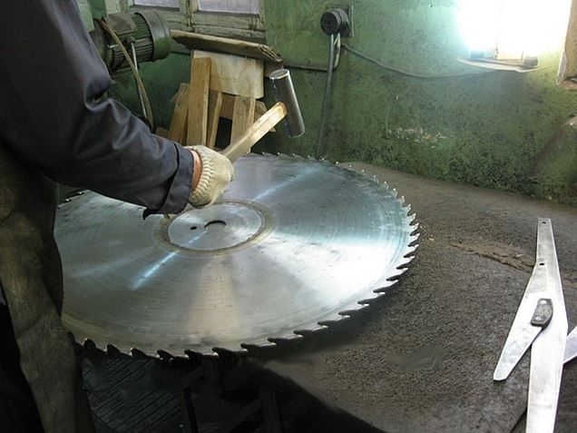

г.Пермь, ул. Василия Васильева, 3в/1
тел: 8-965-550-15-67
Email: prom-159@yandex.ru
тел: 8-965-550-15-67
Email: prom-159@yandex.ru
Участок подготовки инструмента ООО «Пром-Сервис» производит восстановление дисковых пил с тв. сплавными напайками диаметром до 900 мм.
В процессе эксплуатации дисковые пилы, оснащенные пластинами из твердого сплава, могут потерять свои первоначальные качества. Но это не означает, что следует приобретать новый режущий инструмент. В большинстве случаев достаточно просто поменять напайки на пилах.
Мы используем напайки ВК-15 производства РФ, а также по желанию клиента – напайки производства Люксембург.
Работы производятся с применением оборудования VISCAT FULGOR и ISELI.
При необходимости, производим правку, проковку корпусов пил.

Правка пил заключается в устранении местных дефектов — выпучин, изгибов, тугих и слабых мест и придании диску плоской формы. Сначала устраняются дефекты, нарушающие плоскостность пилы: изгибы, складки, выпучины. Далее устраняются тугие и слабые места. Правка дефектов производится вручную на наковальне при помощи правильных молотков.
Проковка представляет собой ослабление средней части диска пилы для повышения его устойчивости в процессе пиления. Под устойчивостью прокованного пильного диска подразумевается способность противостоять воздействию на него боковых сил, возникающих при пилении. Производится также вручную на наковальне при помощи проковочных молотков.